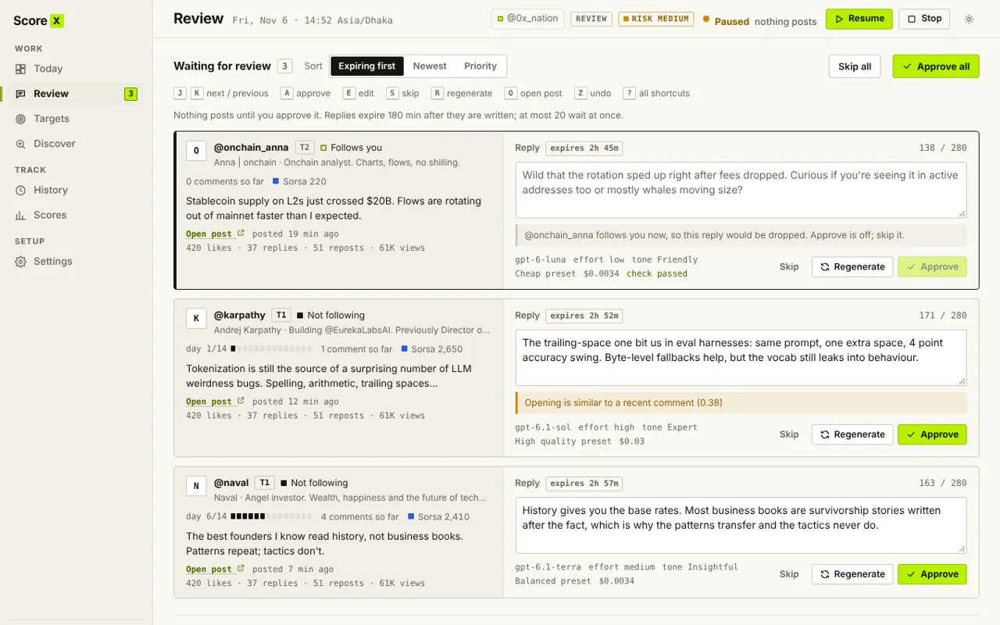
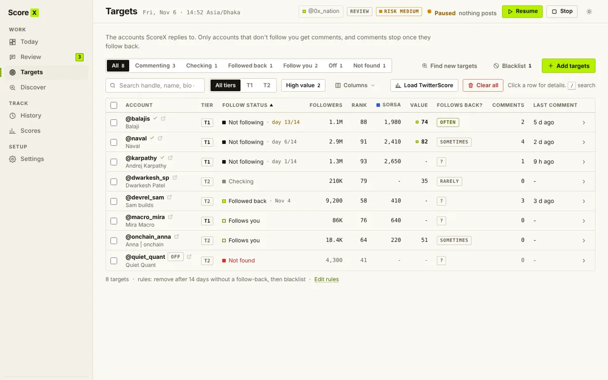
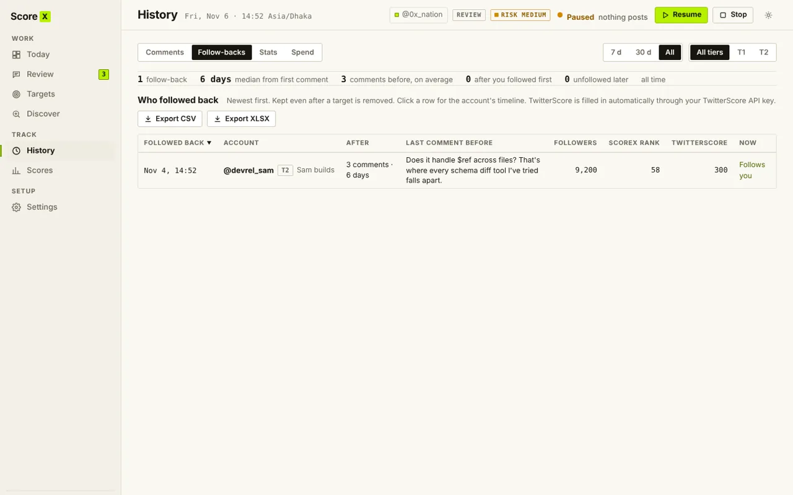
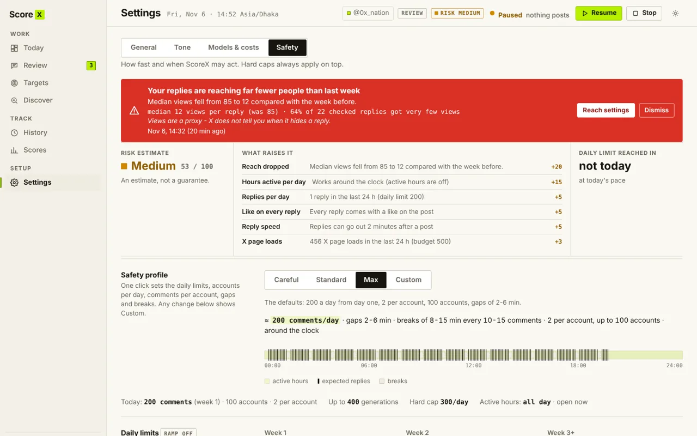

Invite only · early access
Get followed back by the accounts that move your score.
ScoreX is a Chrome extension that replies to the smart accounts you choose on X (Twitter), in your own voice, from your own browser. You approve every reply, or let it run within strict limits.
Free to install from the Chrome Web Store. A license key from your invite is needed to use it.

How it works
Four steps, then it runs every day.
- 1
Pick your targets
Paste usernames or import a CSV. If the file has TwitterScores, accounts sort into Tier 1 and Tier 2 on their own.
- 2
ScoreX watches for posts
When a target posts, it drafts a short reply that adds something the author would want to answer.
- 3
You approve
Edit, skip or approve each draft. Or switch to Full auto and it posts inside your daily limits.
- 4
Track follow-backs
See who followed back, after how many replies, and which tones and tiers work best.
Features
Built for one result: follow-backs from smart accounts.
Replies worth answering
Every reply takes one clear approach: a sharp question, an implication the author left out, an honest doubt, a concrete example. A second check scores each draft for how likely the author is to respond, and weak ones are rewritten.
- Written with your own OpenAI key, in your tone
- No generic praise, no invented facts
- Real cost per reply, with a monthly budget

Spend replies where they pay off
ScoreX follows an account before replying, stops as soon as it follows back, and skips accounts that almost never do, like a 100k account that follows 2k people.
- Follow first, confirmed on the profile
- Skips accounts that follow very few people
- Removes targets that never follow back

Score tracking
Your TwitterScore, Sorsa, Ethos and Moni scores over time, and the scores of your targets.
Smart follower finder
Scan big accounts for their smart followers and add the best ones as targets in a click.
Learns what works
Stats by tone, model and tier show which replies bring follow-backs, and ScoreX leans into them.
Safety
Careful by default.
ScoreX acts in your own browser session, at a human pace, and stays inside hard limits you can lower but not remove.
- Review mode is the default: you approve every reply
- Hard daily caps, gaps between replies, active hours and breaks
- Skips ads, giveaways, political posts and restricted replies
- Stops on X warnings: captcha, rate limit, unusual activity
- Never clicks a prompt it does not recognise
You are responsible for using ScoreX in line with X's rules.

FAQ
Questions people ask first.
How do I get access?
Install ScoreX from the Chrome Web Store, then enter the license key from your invite. ScoreX is invite only for now: request an invite below if you do not have a key. A public release will follow later.
Do you need my X password?
No. ScoreX works inside the X tab you are already logged in to. It never asks for, sees or stores your password.
What does it cost to run?
Replies are written with your own OpenAI API key, so you pay OpenAI directly, usually a fraction of a cent per reply. ScoreX shows the real cost and lets you set a monthly budget.
Where is my data?
In your browser. Post text goes to OpenAI to write replies, score sites are contacted only if you turn them on, and the license server only checks your key. See the privacy policy.
Will it post without me?
Only if you switch to Full auto. In Review mode, the default, nothing is posted until you approve it.
Does it guarantee follow-backs or a higher score?
No. It makes consistent, relevant replies easy and shows you what works. Whether an account follows back is up to them.
Request an invite
Tell us your X handle and what you are building. We are adding people in small groups.
Email contact@shahriarahmed.netAlready have a key? Add ScoreX to Chrome, open it and enter the key.